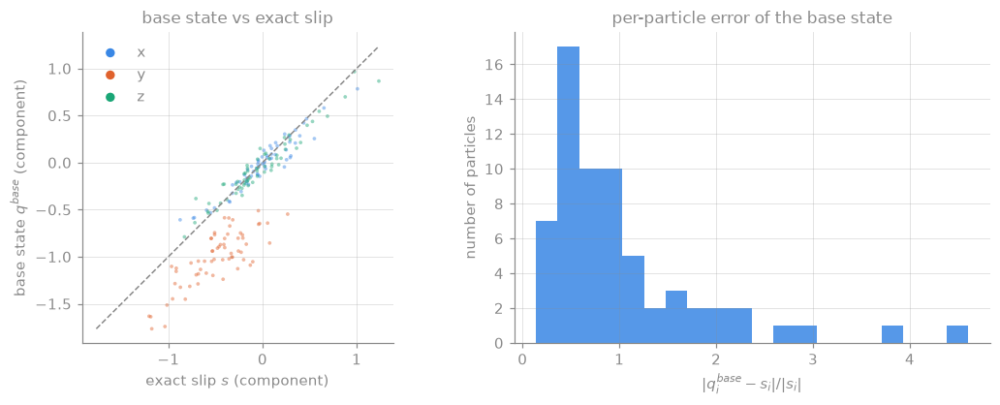
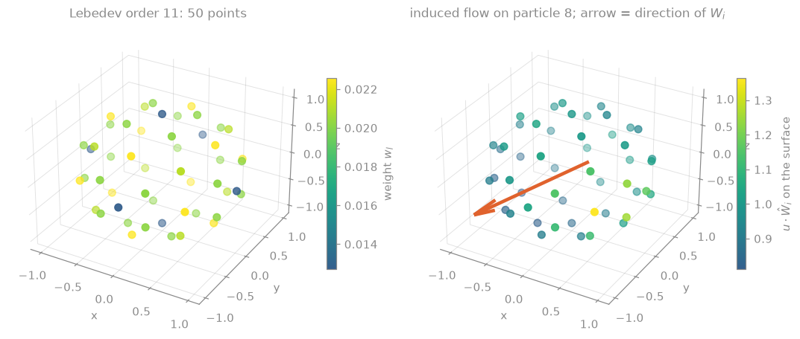
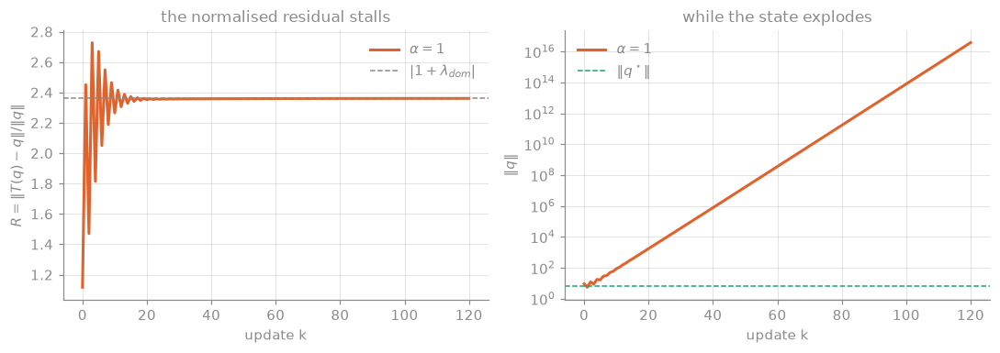
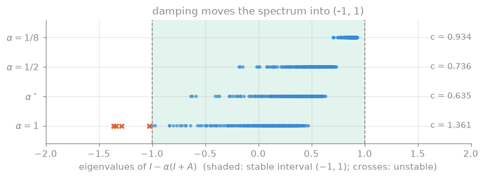
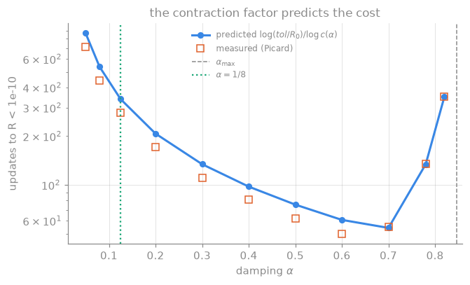
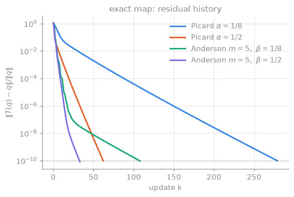
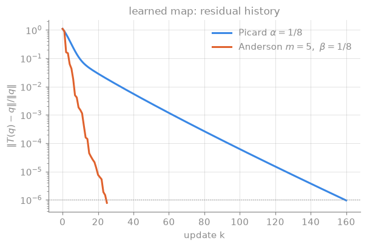
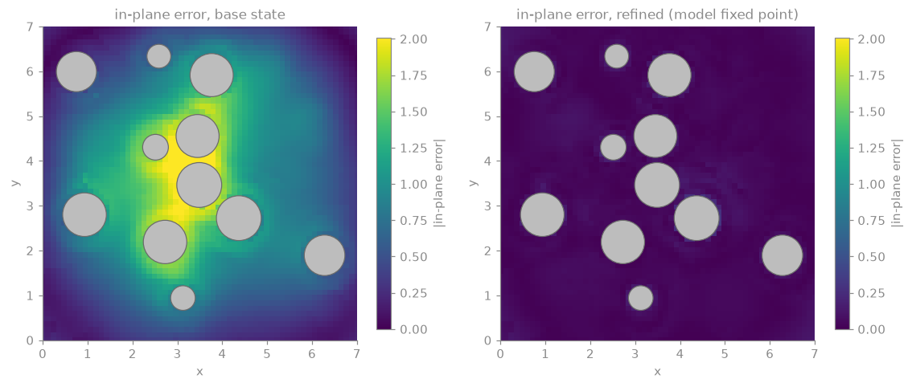

States as unknowns: refinement as a fixed-point problem#
What you will learn
Why a particle’s state depends on the flow it sits in, and how to write this as the self-consistency condition \(\mathbf q = \mathbf q^{\text{base}} - W(\mathbf q)\).
How to compute \(W\), the flow around each particle averaged over its surface with Lebedev quadrature, and why the particle itself must be left out.
How to solve the toy’s exact (linear) version directly, and how far the state known before refinement is from the solution.
How damped Picard iteration and Anderson acceleration solve \(\mathbf q = T(\mathbf q)\), why undamped substitution diverges, and how to recognise divergence when the residual is normalised.
The course’s residual \(R(\mathbf q) = \lVert T(\mathbf q)-\mathbf q\rVert / \lVert\mathbf q\rVert\) and three stopping rules, first on the exact map and then on the map defined by a small trained A0.
Prerequisites: Lesson 01b (one-sphere Stokes field and why naive superposition fails), Lesson 02b (the A0 model). For what an equivariant map is, see the MolSSI e3nn course.
This lesson is the first pass through Part III. Lesson 03b studies the solvers and their spectra in more depth, and Lesson 03c relates residuals to state and field errors.
import time
import numpy as np
import torch
import matplotlib.pyplot as plt
from course_utils import toy_data as td, fixed_point as fp, refinement as rf
from course_utils.plotting import PALETTE, INK
from course_utils.equivariance import check_equivariance, report
torch.set_num_threads(min(4, torch.get_num_threads())) # keeps the lesson fast on shared machines
T_START = time.time()
1. A particle’s state depends on the flow it is in#
The A0 model of Part II predicts the flow from the states \(\mathbf q_j\) of the nearest particles. In the toy, the state is the slip: the particle’s velocity relative to the fluid around it. That is what drives the disturbance a sphere makes (Lesson 01b).
What we actually know about a particle is its velocity \(\mathbf v_i\) in a reference frame (here the toy’s backflow \(\mathbf U_b\); the research used the measured exterior mean \(\langle \mathbf u_f\rangle\), see Lesson 01c). That gives the base state[1]
But the fluid next to particle \(i\) is not at rest in that frame: the other particles drag it along. If \(W_i(\mathbf q)\) is the flow that all other particles induce around particle \(i\), the slip is
The unknown \(\mathbf q\) appears on both sides, because the flow around particle \(i\) is made by the states of the other particles, which are in turn set by the flow around them. Writing \(T(\mathbf q) = \mathbf q^{\text{base}} - W(\mathbf q)\), the condition is a fixed-point problem:
How wrong is the base state? The toy knows the exact slip \(\mathbf s\) (snap.slip). We use a small snapshot
of 64 spheres at a volume fraction of about 0.1.
CFG = dict(n_particles=64, box=7.0)
snap = cu.make_snapshot(seed=4, **CFG)
q_base = snap.velocity - snap.backflow
s_true = snap.slip
rel = lambda a, b: np.linalg.norm(a - b) / np.linalg.norm(b)
print(f"N = {snap.n}, volume fraction {snap.config.volume_fraction:.3f}")
print(f"relative error of the base state: ||q_base - s|| / ||s|| = {rel(q_base, s_true):.3f}")
per_particle = np.linalg.norm(q_base - s_true, axis=1) / np.linalg.norm(s_true, axis=1)
print(f"per particle: median {np.median(per_particle):.3f}, max {per_particle.max():.3f}")
N = 64, volume fraction 0.098
relative error of the base state: ||q_base - s|| / ||s|| = 0.738
per particle: median 0.708, max 4.603

The base state is not a small perturbation of the truth. Each particle is carried by its neighbours’ flow, so its slip is usually smaller than its velocity (most points in the parity plot lie farther from zero vertically than horizontally), and the error varies from particle to particle with the local arrangement. A surrogate fed \(\mathbf q^{\text{base}}\) is fed the wrong inputs.
2. The surface average \(W_i\)#
“The flow around particle \(i\)” has to be a single vector per particle. We average the velocity induced by all other particles over the surface of sphere \(i\). Why the surface and not the value at the centre? For a sphere in Stokes flow, Faxén’s law [Happel and Brenner, 1983] says the force depends on the ambient flow through its surface average, not its value at the centre. The surface average is the “fluid velocity the particle feels”.
where \(\mathbf u_j\) is the disturbance of sphere \(j\) (linear in its state \(\mathbf q_j\)), and \((\mathbf n_l, w_l)\) is a Lebedev rule [Lebedev and Laikov, 1999]: \(L\) directions on the unit sphere and weights summing to 1, chosen so that the rule integrates every polynomial up to a given degree exactly. The course uses order 11 (\(L = 50\)). Let us check the two properties we rely on.
n_leb, w_leb = td.lebedev_sphere(11)
print(f"L = {len(w_leb)} directions, all unit: {np.allclose(np.linalg.norm(n_leb, axis=1), 1)}")
print(report("sum of weights - 1", abs(w_leb.sum() - 1), 1e-12))
# exact sphere averages: <n_x^2> = 1/3, <n_x^4> = 1/5, <n_x^2 n_y^2> = 1/15, <n_x^10> = 1/11
moments = {"<n_x^2>": (n_leb[:, 0]**2, 1/3), "<n_x^4>": (n_leb[:, 0]**4, 1/5),
"<n_x^2 n_y^2>": (n_leb[:, 0]**2 * n_leb[:, 1]**2, 1/15), "<n_x^10>": (n_leb[:, 0]**10, 1/11)}
for name, (vals, exact) in moments.items():
print(report(f"Lebedev {name}", abs(w_leb @ vals - exact), 1e-12))
L = 50 directions, all unit: True
PASS sum of weights - 1: max error 0.0e+00 (tol 1e-12)
PASS Lebedev <n_x^2>: max error 5.6e-17 (tol 1e-12)
PASS Lebedev <n_x^4>: max error 0.0e+00 (tol 1e-12)
PASS Lebedev <n_x^2 n_y^2>: max error 1.4e-17 (tol 1e-12)
PASS Lebedev <n_x^10>: max error 0.0e+00 (tol 1e-12)
Now the average itself, written out with the toy’s exact one-sphere kernel stokes_sphere_matrix
(\(\mathbf u_j(\mathbf x) = G(\mathbf x - \mathbf r_j)\,\mathbf q_j\)). The directions are an argument so that we
can rotate them later.
def surface_average_exact(positions, q, dirs, include_self=False):
"""W_i = sum_l w_l sum_{j != i} G(r_i + a n_l - r_j) q_j -> (N, 3)."""
a, Ls = snap.config.radius, snap.config.screening_length
pts = positions[:, None, :] + a * dirs[None] # (N, L, 3)
G = td.stokes_sphere_matrix(pts[:, :, None, :] - positions[None, None], a, Ls) # (N, L, N, 3, 3)
if not include_self:
G[np.arange(len(positions)), :, np.arange(len(positions))] = 0.0 # leave particle i out
return np.einsum("l,ilnab,nb->ia", w_leb, G, q)
A = td.interaction_matrix(snap.positions, snap.config, snap.grid) # W(q) = A q, built by course_utils
W_inline = surface_average_exact(snap.positions, s_true, n_leb @ snap.grid.T)
print(report("inline W vs interaction_matrix @ q", np.abs(W_inline - (A @ s_true.ravel()).reshape(-1, 3)).max(), 1e-12))
PASS inline W vs interaction_matrix @ q: max error 3.6e-15 (tol 1e-12)
Why leave the particle out? The one-sphere Stokes field equals the sphere’s own slip on its surface (no-slip). So the particle’s own contribution, averaged over its own surface, is exactly \(\mathbf q_i\) and says nothing about its surroundings. Including it would add \(\mathbf q_i\) to \(W_i\) and turn the condition into \(2\mathbf q_i = \mathbf q^{\text{base}}_i - W_i\), which is wrong. The check below confirms the self-term identity.
self_term = surface_average_exact(snap.positions, s_true, n_leb, include_self=True) \
- surface_average_exact(snap.positions, s_true, n_leb)
print(report("self-term average == q_i (no-slip)", np.abs(self_term - s_true).max(), 1e-12))
PASS self-term average == q_i (no-slip): max error 5.3e-15 (tol 1e-12)

Animation S6, the surface average. Particle \(i\) sits between two settling neighbours whose flow streams past it; its own disturbance is left out, as in \(W_i\). The flow is sampled at the Lebedev points, drawn with area proportional to the weights \(w_l\). The sampled arrows are gathered tail to tail and merge into their weighted mean \(W_i = \sum_l w_l\,\mathbf u(\mathbf r_i + a\,\mathbf n_l)\), which enters the condition \(\mathbf q_i = \mathbf q^{\text{base}}_i - W_i\). A final panel compares single surface points and the value at the centre with the exact surface mean: the centre misses it slightly, as Faxén’s law \(\langle\mathbf u\rangle_S = \mathbf u(\mathbf r_i) + \tfrac{a^2}{6}\nabla^2\mathbf u(\mathbf r_i)\) predicts. For clarity the clip uses the 26-point Lebedev rule (exact to degree 7); this lesson uses the 50-point rule. The clip is drawn on a dark stage in both page themes. Explore the same toy in 3D: open the interactive version in a new tab, or show it here:
Interactive 3D version: surface average over particle i (toy Stokes flow)
3. The exact solution, and its symmetry#
For the toy, \(W\) is linear: \(W(\mathbf q) = A\mathbf q\) with a \(3N\times 3N\) matrix \(A\). The fixed-point condition becomes the linear system
which a direct solve settles. This is how the toy generated snap.slip in the first place, so the two must
agree to round-off, while the base state remains far from both.
Where the equation comes from, and why not simply substitute. Row \(i\) of the condition says that particle \(i\)’s state is its base state minus the flow the other particles induce around it:
where the \(3\times3\) block \(A_{ij}\) is the surface average over sphere \(i\) of the flow that a unit state on particle \(j\) produces. Take two equal spheres in line along the settling axis, with base speed 1, and let \(t\) be the axis-axis entry of \(A_{12}\). Then \(q_1 = 1 - t\,q_2\) and \(q_2 = 1 - t\,q_1\): each unknown sits inside the other’s equation. By symmetry \(q_1 = q_2 = q\), so \(q = 1 - t\,q\) and
The series is what repeated substitution produces, one more term per pass, and it converges because \(0 < t < 1\). For \(N\) particles the same substitution, started from \(\mathbf q^{\text{base}}\), gives the partial sums
which converge to \((I+A)^{-1}\mathbf q^{\text{base}}\) only if the powers of \(A\) shrink, that is, if every eigenvalue of \(A\) has \(\lvert\lambda\rvert < 1\). The direct solve has no such condition. Section 4 measures the eigenvalues of the default toy.
Animation R1, the self-consistency equation. Two spheres first. Each starts from its base state (dashed yellow); the upper sphere drags fluid past the lower one (teal), and the surface average \(W_2\) of that flow is subtracted, \(q_2 = q_2^{\text{base}} - W_2\). The same holds with the roles swapped, so the unknown is on both sides. On a number line the partial sums of \(1 - t + t^2 - \dots\) hop back and forth across \(1/(1+t)\), each hop \(t\) times shorter. Then 12 spheres: row \(i\) sums its neighbours’ flow, the rows stack into \(\mathbf q = \mathbf q^{\text{base}} - A\,\mathbf q\), and the right-hand side is named \(T(\mathbf q)\). Substituting from the base state adds one power of \(A\) per pass; for these 12 spheres the terms \((-A)^n\mathbf q^{\text{base}}\) shrink and the error falls. Notice the last comparison: for the default toy with 96 crowded spheres the same terms grow, because the largest \(\lvert\lambda\rvert\) of \(A\) exceeds one. The equation is still fine, and the direct solve below settles it; it is plain substitution that fails, which is where Section 4 starts. The two-sphere diagrams are scalar (speeds along the settling axis); the larger stages are projections. The clip is drawn on a dark stage in both page themes and has a voice-over with captions.
Now the direct solve, in code:
q_star = np.linalg.solve(np.eye(3 * snap.n) + A, q_base.ravel()).reshape(-1, 3)
print(report("direct solve vs snap.slip", np.abs(q_star - s_true).max(), 1e-12))
print(f"base state vs solution: relative error {rel(q_base, q_star):.3f}")
T_exact = rf.exact_map(snap)
print(report("fp_residual(T_exact, q*) (q* is a fixed point)", fp.fp_residual(T_exact, q_star), 1e-12))
PASS direct solve vs snap.slip: max error 0.0e+00 (tol 1e-12)
base state vs solution: relative error 0.738
PASS fp_residual(T_exact, q*) (q* is a fixed point): max error 5.7e-16 (tol 1e-12)
The solution should be equivariant: rotate or reflect the whole suspension, velocities included, and the
slips rotate with it. We test the map \((\mathbf r, \mathbf q^{\text{base}}) \mapsto \mathbf q^\star\) with
check_equivariance. Positions are rotated about the origin, which is fine because the problem only uses
differences of positions.
Failure first. With the Lebedev directions held fixed, the check fails:
def solve_exact(positions, qb, dirs, weights=None):
"""Solve (I + A) q = q_base with A built on the given Lebedev directions (default weights: order 11)."""
pos, qb, d = (t.numpy() for t in (positions, qb, dirs))
w = w_leb if weights is None else weights
Amat = np.einsum("l,ilnab->ianb", w, td.stokes_sphere_matrix(
(pos[:, None, :] + snap.config.radius * d[None])[:, :, None, :] - pos[None, None],
snap.config.radius, snap.config.screening_length) * (1 - np.eye(len(pos)))[:, None, :, None, None])
Amat = Amat.reshape(3 * len(pos), 3 * len(pos))
return torch.as_tensor(np.linalg.solve(np.eye(len(Amat)) + Amat, qb.ravel()).reshape(-1, 3))
P = torch.as_tensor(snap.positions - snap.config.box / 2) # centred, so rotations keep the box in place
QB = torch.as_tensor(q_base)
DIRS = torch.as_tensor(n_leb)
fixed_grid = lambda pos, qb: solve_exact(pos, qb, DIRS)
try:
check_equivariance(fixed_grid, (P, QB), ("vector", "vector"), n_trials=3, name="exact slip, fixed grid")
except AssertionError as err:
print("caught:", err)
FAIL exact slip, fixed grid: max error 4.7e-05 (tol 1e-12) [3 random g in O(3), det = [-1, 1]]
caught: exact slip, fixed grid: equivariance error 4.670e-05 >= tol 1.0e-12
The error is small but far above round-off. A 50-point rule integrates polynomials up to degree 11 exactly,
but the field of a neighbouring sphere (a screened \(1/r\) disturbance) is not a polynomial on the surface. So the quadrature error
depends on how the grid sits relative to the neighbours, and rotating the suspension but not the grid changes
the answer slightly. The fix: treat the grid directions as vectors that rotate with everything else (the toy
does this in ToySnapshot.rotated).
check_equivariance(solve_exact, (P, QB, DIRS), ("vector", "vector", "vector"), n_trials=3,
name="exact slip, grid rotated with the suspension");
PASS exact slip, grid rotated with the suspension: max error 1.4e-15 (tol 1e-12) [3 random g in O(3), det = [-1, 1]]
In practice a fixed grid is fine: its error is far below any model error. But it explains why an “exactly equivariant” pipeline can show an error far above round-off in a test, and why our tests rotate the grid.
4. Picard iteration, and what goes wrong without damping#
A trained model gives a nonlinear \(W\), so there is no matrix to invert. The simplest method is substitution (Picard iteration): start from \(\mathbf q^{\text{base}}\) and repeat \(\mathbf q \leftarrow T(\mathbf q)\). We try it on the exact map first, where we know the answer.
undamped = fp.picard(T_exact, q_base, alpha=1.0, tol=1e-10, max_iter=120, keep_history=True)
norms = [np.linalg.norm(q) for q in undamped.history]
lam = np.linalg.eigvals(A)
lam_dom = lam[np.argmax(np.abs(lam))]
print(f"after {undamped.n_iter} undamped updates: R = {undamped.residuals[-1]:.4f}, "
f"||q|| grew by a factor {norms[-1] / norms[0]:.2e}")
print(f"dominant eigenvalue of A: {lam_dom.real:+.4f}{lam_dom.imag:+.4f}i, |lambda| = {abs(lam_dom):.4f}")
print(f"final R = {undamped.residuals[-1]:.4f} vs |1 + lambda_dom| = {abs(1 + lam_dom):.4f} "
f"(an asymptotic limit, approached as the dominant mode takes over)")
after 120 undamped updates: R = 2.3609, ||q|| grew by a factor 4.10e+15
dominant eigenvalue of A: +1.3611+0.0000i, |lambda| = 1.3611
final R = 2.3609 vs |1 + lambda_dom| = 2.3611 (an asymptotic limit, approached as the dominant mode takes over)
Substitution diverges. Note how the failure shows. Write the error as \(\mathbf e = \mathbf q - \mathbf q^\star\). For the linear map, \(\mathbf e \leftarrow -A\,\mathbf e\), so the error grows like \(|\lambda_{\text{dom}}|^k\) along the dominant eigenvector, and soon \(\mathbf q \approx \mathbf e\). Then \(T(\mathbf q)-\mathbf q = -(I+A)\mathbf e \approx -(1+\lambda_{\text{dom}})\mathbf q\), so the normalised residual tends to the constant \(|1+\lambda_{\text{dom}}|\) while \(\lVert\mathbf q\rVert\) explodes. A stopping rule that only waits for \(R\) to fall below a tolerance would simply run to its budget and return garbage.

4.1 Damping#
Damped Picard takes only a fraction \(\alpha\) of the step:
Any fixed point of \(T\) is still a fixed point of this update, so damping changes the path, not the destination. For the linear map the error obeys \(\mathbf e_{k+1} = \bigl(I - \alpha(I+A)\bigr)\mathbf e_k\). The iteration converges if and only if every eigenvalue \(1 - \alpha\mu\) of that matrix lies inside the unit circle, where \(\mu = 1+\lambda\) runs over the eigenvalues of \(I+A\). When every \(\operatorname{Re}\mu > 0\), this holds for
and the error shrinks per update by the contraction factor \(c(\alpha) = \max_\mu |1-\alpha\mu|\).
mu = 1 + lam
print(f"min Re(mu) = {mu.real.min():.3f} (> 0, so a small enough alpha always works)")
alpha_max = float((2 * mu.real / np.abs(mu)**2).min())
contraction = lambda alpha: float(np.abs(1 - alpha * mu).max())
print(f"alpha_max = {alpha_max:.3f}")
for alpha in (1.0, 0.5, 0.125):
print(f"alpha = {alpha:<6} contraction factor c = {contraction(alpha):.4f}")
min Re(mu) = 0.528 (> 0, so a small enough alpha always works)
alpha_max = 0.847
alpha = 1.0 contraction factor c = 1.3611
alpha = 0.5 contraction factor c = 0.7362
alpha = 0.125 contraction factor c = 0.9340
The formula above is general: the Jacobian of a learned map is not symmetric, and its eigenvalues can be complex. The toy’s exact \(A\) is special. Its kernel is even, \(G(-\mathbf x) = G(\mathbf x)\), and is a symmetric \(3\times3\) matrix. The Lebedev rule is also symmetric under \(\mathbf n \to -\mathbf n\). Together these make \(A\) a symmetric matrix, so its spectrum is real:
print(report("A is symmetric: ||A - A^T|| / ||A||", np.linalg.norm(A - A.T) / np.linalg.norm(A), 1e-12))
print(f"largest |Im(lambda)| = {np.abs(lam.imag).max():.1e}")
mu_min, mu_max = mu.real.min(), mu.real.max()
print(f"real spectrum: alpha_max = 2 / mu_max = {2 / mu_max:.3f}, "
f"fastest alpha = 2 / (mu_min + mu_max) = {2 / (mu_min + mu_max):.3f}")
PASS A is symmetric: ||A - A^T|| / ||A||: max error 1.8e-16 (tol 1e-12)
largest |Im(lambda)| = 0.0e+00
real spectrum: alpha_max = 2 / mu_max = 0.847, fastest alpha = 2 / (mu_min + mu_max) = 0.692
For a real spectrum the stability condition is a statement about an interval: every \(1-\alpha\mu\) must lie in \((-1, 1)\). A large \(\alpha\) throws the largest \(\mu\) past \(-1\). A small \(\alpha\) leaves the smallest \(\mu\) just below \(+1\), which converges slowly. The fastest choice balances the two ends, \(\alpha^\star = 2/(\mu_{\min}+\mu_{\max})\).

The theory predicts the number of updates to reach a tolerance: about \(\log(\text{tol}/R_0)/\log c(\alpha)\). We compare that with the solver across a range of \(\alpha\).
alphas = np.array([0.05, 0.08, 0.125, 0.2, 0.3, 0.4, 0.5, 0.6, 0.7, 0.78, 0.82, 0.86, 0.9])
tol = 1e-10
measured, predicted = [], []
for alpha in alphas:
r = fp.picard(T_exact, q_base, alpha=alpha, tol=tol, max_iter=1500)
measured.append(r.n_iter if r.converged else np.nan)
c = contraction(alpha)
predicted.append(np.log(tol / r.residuals[0]) / np.log(c) if c < 1 else np.nan)
for alpha, m_, p_ in zip(alphas, measured, predicted):
print(f"alpha {alpha:5.3f}: measured {m_:>5} predicted {p_:7.1f}" if np.isfinite(p_)
else f"alpha {alpha:5.3f}: measured {m_:>5} predicted diverges")
alpha 0.050: measured 712 predicted 865.3
alpha 0.080: measured 441 predicted 536.4
alpha 0.125: measured 279 predicted 339.1
alpha 0.200: measured 171 predicted 207.5
alpha 0.300: measured 111 predicted 134.3
alpha 0.400: measured 81 predicted 97.6
alpha 0.500: measured 62 predicted 75.5
alpha 0.600: measured 50 predicted 60.8
alpha 0.700: measured 55 predicted 54.2
alpha 0.780: measured 135 predicted 134.2
alpha 0.820: measured 352 predicted 350.2
alpha 0.860: measured nan predicted diverges
alpha 0.900: measured nan predicted diverges

The prediction tracks the measurement within about 20% for small \(\alpha\) and closely near \(\alpha_{\max}\), and nothing converges beyond \(\alpha_{\max}\) (missing points). On this exact map the fastest damping is near \(\alpha^\star\), several times faster than \(\alpha = 1/8\). The research used \(\alpha = 1/8\) with its learned maps. The course reads that choice as a safety margin, though the research records do not state the reason: a learned map’s spectrum is unknown, it changes with the snapshot and during training, and the map is nonlinear, so a margin costs extra updates but protects against divergence. Lesson 03b looks at this trade-off.
Animation S4, damped fixed-point iteration. Nine spheres settle in a plane, with their state arrows (yellow), the fixed point \(\mathbf q^\star\) (dashed green) and the flow the states induce (teal). A callout builds one update for one particle: the neighbours’ flow at its Lebedev points, the average \(W_i\), the target \(T_i(\mathbf q) = \mathbf q^{\text{base}}_i - W_i(\mathbf q)\), and the damped step, which moves the tip of \(\mathbf q_i\) a fraction \(\alpha\) of the way towards \(T_i\). Ten iterations with \(\alpha = 0.5\) follow, with the residual on a log scale. Then, from the same start, \(\alpha = 0.5\) converges while \(\alpha = 0.8\) diverges, because along the top eigenvector the error is multiplied by \(1 - \alpha\mu_{\max}\) at every step. The arrangement is small and stylised and uses the 26-point Lebedev rule, so the values of \(\mu_{\max}\) and of the bound on \(\alpha\) in the clip are its own; the cells above print them for this lesson’s snapshot. The clip is drawn on a dark stage in both page themes. Explore the same toy in 3D: open the interactive version in a new tab, or show it here:
Interactive 3D version: damped Picard iteration, step by step (toy)
Animation R2 in Lesson 03b, Section 1 plots the factor \(1-\alpha\mu\) for every mode of this toy and shows how a smaller \(\alpha\) brings all of them inside the band between \(-1\) and \(1\).
5. Anderson acceleration#
Picard uses only the latest iterate. Anderson acceleration [Walker and Ni, 2011] keeps the last \(m\) iterates and their defects \(\mathbf f_k = T(\mathbf q_k) - \mathbf q_k\). It picks the combination of recent steps whose predicted defect is smallest, a least-squares problem with only \(m\) unknowns:
where the columns of \(\Delta F\) and \(\Delta Q\) are differences of successive defects and iterates. With \(m = 0\) it is damped Picard with \(\alpha = \beta\). Let us check that identity first.
p5 = fp.picard(T_exact, q_base, alpha=0.125, tol=0, max_iter=15)
a5 = fp.anderson(T_exact, q_base, m=0, beta=0.125, tol=0, max_iter=15)
print(report("Anderson(m=0) == Picard(alpha=beta)", np.abs(p5.q - a5.q).max(), 1e-12))
PASS Anderson(m=0) == Picard(alpha=beta): max error 2.2e-16 (tol 1e-12)
runs = {
r"Picard $\alpha=1/8$": fp.picard(T_exact, q_base, alpha=0.125, tol=1e-10, max_iter=600),
r"Picard $\alpha=1/2$": fp.picard(T_exact, q_base, alpha=0.5, tol=1e-10, max_iter=600),
r"Anderson $m=5,\ \beta=1/8$": fp.anderson(T_exact, q_base, m=5, beta=0.125, tol=1e-10, max_iter=600),
r"Anderson $m=5,\ \beta=1/2$": fp.anderson(T_exact, q_base, m=5, beta=0.5, tol=1e-10, max_iter=600),
}
for name, r in runs.items():
print(f"{name:<28} updates {r.n_iter:4d} converged {r.converged} error vs q* {rel(r.q, q_star):.1e}")
fig, ax = cu.plotting.residual_plot(runs, title="exact map: residual history")
ax.axhline(1e-10, color=INK, lw=0.8, ls=":")
plt.tight_layout(); plt.show()
Picard $\alpha=1/8$ updates 279 converged True error vs q* 1.8e-10
Picard $\alpha=1/2$ updates 62 converged True error vs q* 1.8e-10
Anderson $m=5,\ \beta=1/8$ updates 108 converged True error vs q* 1.7e-10
Anderson $m=5,\ \beta=1/2$ updates 33 converged True error vs q* 1.4e-10

Compare solvers at the same damping. Anderson with \(\beta = 1/8\) needs far fewer evaluations of \(T\) than Picard with \(\alpha = 1/8\), and Anderson with \(\beta = 1/2\) beats Picard with \(\alpha = 1/2\). Picard at \(1/2\) can beat Anderson at \(1/8\), but that compares a well-tuned damping with a cautious one, not the two methods. For a linear map it behaves like the Krylov method GMRES. Each evaluation of \(T\) is one pass of the surrogate over every particle surface, so the evaluation count is the cost that matters.
Animation R3 in Lesson 03b, Section 2 derives \(\boldsymbol\gamma\) for memory \(m = 1\) as a picture: the point on the line through the last two iterates where the defect is smallest.
6. Residuals and stopping rules#
The course measures progress with one residual everywhere:
It uses the undamped defect, so it does not depend on the solver or on \(\alpha\). It is zero exactly at a fixed point (Section 3 checked \(R(\mathbf q^\star)\)).
The step size is a different quantity. For damped Picard, \(\lVert\mathbf q_{k+1}-\mathbf q_k\rVert = \alpha\lVert T(\mathbf q_k)-\mathbf q_k\rVert\). A small step can just mean a small \(\alpha\), which is why we never stop on step size.
For the linear map, \(T(\mathbf q) - \mathbf q = (I+A)(\mathbf q^\star - \mathbf q)\). So the residual bounds the state error, \(\lVert\mathbf q-\mathbf q^\star\rVert \le \lVert(I+A)^{-1}\rVert\, R(\mathbf q)\,\lVert\mathbf q\rVert\), and the bound is only as good as the conditioning of \(I+A\).
All three statements can be checked numerically:
q_test = q_base + 0.3 * np.random.default_rng(0).standard_normal(q_base.shape)
step = (1 - 0.125) * q_test + 0.125 * T_exact(q_test) - q_test
print(report("step = alpha * ||T(q) - q||",
abs(np.linalg.norm(step) - 0.125 * np.linalg.norm(T_exact(q_test) - q_test)), 1e-12))
lhs = (T_exact(q_test) - q_test).ravel()
rhs = (np.eye(3 * snap.n) + A) @ (q_star - q_test).ravel()
print(report("T(q) - q == (I + A)(q* - q)", np.abs(lhs - rhs).max(), 1e-12))
inv_norm = np.linalg.norm(np.linalg.inv(np.eye(3 * snap.n) + A), 2)
err, bound = np.linalg.norm(q_test - q_star), inv_norm * fp.fp_residual(T_exact, q_test) * np.linalg.norm(q_test)
print(f"state error {err:.4f} <= bound {bound:.4f}: {err <= bound}")
PASS step = alpha * ||T(q) - q||: max error 0.0e+00 (tol 1e-12)
PASS T(q) - q == (I + A)(q* - q): max error 1.3e-15 (tol 1e-12)
state error 6.0021 <= bound 21.0043: True
A practical solver uses three stopping rules together:
Tolerance: stop when \(R < \text{tol}\) (converged).
Budget: stop after a fixed number of updates (with a learned model this is often the main rule, see Lesson 03c).
Divergence guard: stop if \(\lVert\mathbf q\rVert\) has grown by a large factor, or if \(R\) has not improved for a while. Section 4 showed that rules 1 and 2 alone cannot detect divergence.
course_utils.fixed_point.picard implements rules 1 and 2 (and stops on non-finite values). Rule 3 can be
added through its callback without changing the solver:
class Diverged(Exception):
pass
def guarded(solver, T, q0, growth=1e3, patience=30, **kw):
"""Run a course solver with a divergence guard; return (result or None, reason)."""
n0, best = np.linalg.norm(q0), [np.inf, 0]
def cb(k, q, R):
if np.linalg.norm(q) > growth * n0:
raise Diverged(f"||q|| grew by more than {growth:.0e} at update {k} (R = {R:.3f})")
if R < best[0]:
best[:] = [R, k]
elif k - best[1] > patience:
raise Diverged(f"R has not improved for {patience} updates (best {best[0]:.2e} at {best[1]})")
try:
return solver(T, q0, callback=cb, **kw), "ok"
except Diverged as why:
return None, str(why)
for alpha in (1.0, 0.125):
res, why = guarded(fp.picard, T_exact, q_base, alpha=alpha, tol=1e-10, max_iter=600)
print(f"alpha = {alpha:<6}: " + (f"converged in {res.n_iter} updates" if res else f"stopped: {why}"))
alpha = 1.0 : stopped: ||q|| grew by more than 1e+03 at update 26 (R = 2.356)
alpha = 0.125 : converged in 279 updates
Animation R4 in Lesson 03c, Section 1 separates the two questions that the residual and the error answer: has the iteration converged, and is the state right.
7. The same problem with a learned map#
Now replace the exact \(W\) with a trained mini-A0. For particle \(i\), the model gathers the \(M\) nearest other
particles at each Lebedev point on sphere \(i\), predicts the velocity there, and the predictions are averaged
with the Lebedev weights. This is course_utils.refinement.induced_velocity, and the map is
\(T(\mathbf q) = \mathbf q^{\text{base}} - W_{\text{model}}(\mathbf q)\).
Neighbour sets: course versus research
The course picks the \(M\) nearest neighbours afresh at every Lebedev point. The research code picks one set per particle, the nearest neighbours of the particle’s centre (itself excluded), and reuses it at every surface point. Both choices depend only on distances, so both keep the map equivariant. They differ only when a neighbour near the edge of the set is closer to one side of the sphere than to the centre.
A teaching shortcut
To get a usable model in a few seconds, we train A0 on oracle inputs: the toy’s exact slips, in the backflow frame. The model therefore never sees \(\mathbf q^{\text{base}}\). That is not, however, why the base-state field below is poor: the training slips cover almost the whole range of base-state magnitudes, and a control cell below shows that even the toy’s exact kernel, fed the base state, does just as badly. The inputs are wrong, not the model. How states are updated during training, and what that changes, is the subject of Lesson 03d and Lesson 04d.
M = 16
train_snaps = cu.make_snapshots(4, seed0=0, **CFG) # seeds 0-3; the test snapshot above is seed 4
data = cu.make_dataset(train_snaps, n_points=1500, M=M, frame="backflow", state="true", dtype=torch.float32)
torch.manual_seed(0)
model = cu.models.MiniA0(width=48, depth=3)
hist = cu.training.train(model, data, epochs=20, lr=2e-3, batch=64, seed=0, log_every=10)
model = model.double().eval()
epoch 0 train MSE 5.2530e-02 (0.3 s)
epoch 10 train MSE 2.0119e-03 (3.1 s)
epoch 19 train MSE 1.4231e-03 (5.7 s)
As in Section 2, we first write the surface average out by hand, with the directions as an argument, and compare it with the shared implementation:
@torch.no_grad()
def model_map(positions, q, qb, dirs):
"""T(q) = q_base - W_model(q), with the Lebedev directions as an input (torch in, torch out)."""
pos, q, qb, d = (t.numpy() for t in (positions, q, qb, dirs))
N, L = len(pos), len(d)
pts = (pos[:, None, :] + snap.config.radius * d[None]).reshape(-1, 3)
phi = td.local_volume_fraction(pos, snap.config.radius, snap.config.phi_radius)
inp = td.neighbour_inputs(pts, pos, q, phi, snap.density_ratio, M, exclude=np.repeat(np.arange(N), L))
out = model(inp["scalars"], inp["e_j"], inp["x_fj"]).numpy().reshape(N, L, 3)
return torch.as_tensor(qb - np.einsum("l,nli->ni", w_leb, out))
T_model = rf.picard_map(model, snap, q_base, M=M) # the shared version (NumPy in, NumPy out)
T_inline = model_map(torch.as_tensor(snap.positions), torch.as_tensor(q_base), QB, DIRS).numpy()
print(report("inline model map vs refinement.picard_map", np.abs(T_inline - T_model(q_base)).max(), 1e-12))
PASS inline model map vs refinement.picard_map: max error 0.0e+00 (tol 1e-12)
The model map inherits the symmetry of A0 and of the surface average, provided the grid rotates too:
Q0 = torch.as_tensor(s_true)
check_equivariance(model_map, (P, Q0, QB, DIRS), ("vector",) * 4, n_trials=3, name="learned map T(q)");
PASS learned map T(q): max error 6.5e-16 (tol 1e-12) [3 random g in O(3), det = [-1, 1]]
Picard and Anderson only form linear combinations of \(\mathbf q\) and \(T(\mathbf q)\), with coefficients that depend on norms and inner products (Anderson’s least squares). So the whole refinement is equivariant as well. We check a few updates of each solver:
def refined(solver, n_steps, **kw):
def f(positions, qb, dirs):
T = lambda q: model_map(positions, torch.as_tensor(q), qb, dirs).numpy()
return torch.as_tensor(solver(T, qb.numpy(), tol=0, max_iter=n_steps, **kw).q)
return f
check_equivariance(refined(fp.picard, 4, alpha=0.125), (P, QB, DIRS), ("vector",) * 3, n_trials=2,
name="4 Picard updates");
check_equivariance(refined(fp.anderson, 4, m=5, beta=0.125), (P, QB, DIRS), ("vector",) * 3, n_trials=2,
name="4 Anderson updates");
PASS 4 Picard updates: max error 4.2e-16 (tol 1e-12) [2 random g in O(3), det = [-1, 1]]
PASS 4 Anderson updates: max error 1.3e-14 (tol 1e-12) [2 random g in O(3), det = [-1, 1]]
Now we solve. Failure first again: undamped substitution, with the guard of Section 6.
t0 = time.time()
res1, why = guarded(fp.picard, T_model, q_base, alpha=1.0, tol=1e-6, max_iter=40, patience=15)
print(f"learned map, alpha = 1: " + (f"converged in {res1.n_iter}" if res1 else f"stopped: {why}"))
learned = {
r"Picard $\alpha=1/8$": fp.picard(T_model, q_base, alpha=0.125, tol=1e-6, max_iter=300),
r"Anderson $m=5,\ \beta=1/8$": fp.anderson(T_model, q_base, m=5, beta=0.125, tol=1e-6, max_iter=300),
}
for name, r in learned.items():
print(f"{name:<28} updates {r.n_iter:4d} converged {r.converged} final R {r.residuals[-1]:.1e}")
q_P, q_A = (r.q for r in learned.values())
print(f"||q_Picard - q_Anderson|| / ||q_Anderson|| = {rel(q_P, q_A):.1e} (same destination)")
print(f"model fixed point vs exact slip: relative error {rel(q_A, s_true):.3f} "
f"(base state: {rel(q_base, s_true):.3f})")
print(f"[{time.time() - t0:.0f} s]")
learned map, alpha = 1: stopped: R has not improved for 15 updates (best 1.10e+00 at 0)
Picard $\alpha=1/8$ updates 160 converged True final R 9.5e-07
Anderson $m=5,\ \beta=1/8$ updates 25 converged True final R 7.8e-07
||q_Picard - q_Anderson|| / ||q_Anderson|| = 2.2e-06 (same destination)
model fixed point vs exact slip: relative error 0.073 (base state: 0.738)
[28 s]

Both solvers reach the same point, Anderson in far fewer updates. The solver sets the speed, not the destination. That destination is the model’s fixed point: the state that agrees with the flow this model predicts. It is much closer to the exact slip than the base state, but not equal to it, because the model is imperfect.
Converging is not the research’s goal
Here we iterate to a tight tolerance to show where the solvers go. The research did not. During training it makes one damped update per cycle, and at inference it stops after a small fixed budget of updates chosen on development data, because iterating a learned map much longer can make the predicted field worse. Lessons 03c and 03d return to this.
Finally, does the refined state make the predicted field better? We compare the model’s flow at random exterior points of the test snapshot, fed three different states.
pts = snap.sample_exterior(2000, rng=1)
y_true = snap.field(pts) - snap.backflow
@torch.no_grad()
def predict_field(q, points):
inp = td.neighbour_inputs(points, snap.positions, q, snap.phi_local, snap.density_ratio, M)
return model(inp["scalars"], inp["e_j"], inp["x_fj"]).numpy()
states = {"base state": q_base, "refined (model fixed point)": q_A, "exact slip (oracle)": s_true}
preds = {k: predict_field(q, pts) for k, q in states.items()}
for k, p in preds.items():
print(f"{k:<28} field R^2 = {cu.metrics.r2(p, y_true):8.3f} NRMSE = {cu.metrics.nrmse(p, y_true):.3f}")
base state field R^2 = -10.473 NRMSE = 1.228
refined (model fixed point) field R^2 = 0.968 NRMSE = 0.065
exact slip (oracle) field R^2 = 0.954 NRMSE = 0.077
A control separates the two possible culprits, the model and its inputs. The toy’s exact superposition kernel, fed the base state instead of the true slip, is a perfect “model” with wrong inputs:
y_exact_base = np.einsum("pnij,nj->pi", td._pair_matrices(pts, snap.positions, snap.config), q_base)
print(f"{'exact kernel, base state':<28} field R^2 = {cu.metrics.r2(y_exact_base, y_true):8.3f}")
print(f"{'learned model, base state':<28} field R^2 = {cu.metrics.r2(preds['base state'], y_true):8.3f}")
exact kernel, base state field R^2 = -10.678
learned model, base state field R^2 = -10.473
The two numbers are close: the poor base-state field comes from the state, not from the model.

With the base state the model’s field is badly wrong: every particle’s disturbance is driven by a slip that is too large. After refinement the error map is much quieter. The refined field can even fit better than the field from the oracle slips. The refined state is consistent with the model’s own predictions, so it can absorb some of the model’s errors. This is a reminder that refinement optimises self-consistency, not closeness to the true state. Lessons 03c and 04d return to this point.
Summary#
A particle’s state is its slip relative to the flow it sits in. That flow depends on the other particles’ states, so the states solve the fixed-point problem \(\mathbf q = T(\mathbf q) = \mathbf q^{\text{base}} - W(\mathbf q)\).
\(W_i\) is the induced velocity averaged over particle \(i\)’s surface with a Lebedev rule, leaving particle \(i\) out (its own field averages to exactly \(\mathbf q_i\)). A fixed grid is equivariant only up to quadrature error, and a grid that rotates with the suspension makes it exact.
On the toy, \(W\) is linear and a direct solve of \((I+A)\mathbf q = \mathbf q^{\text{base}}\) reproduces the exact slip, which is far from the base state.
Undamped substitution diverges when \(A\) has an eigenvalue larger than 1 in magnitude. The normalised residual then stalls instead of growing, so a solver must also guard against growth of \(\lVert\mathbf q\rVert\). Damping with \(\alpha < \alpha_{\max}\) converges at a rate set by the contraction factor. On the toy, \(A\) is symmetric, the spectrum is real, and the fastest damping is \(2/(\mu_{\min}+\mu_{\max})\). The small \(\alpha = 1/8\) used with learned maps is best read as a safety margin, not as the optimum.
At the same damping, Anderson acceleration reaches the same fixed point in far fewer evaluations of \(T\). The solver changes speed, not destination.
With a learned map, refinement converges to the model’s fixed point. That point is much closer to the truth than the base state and strongly improves the predicted field, but it is not the true state. The research stops after a small budget chosen on development data rather than iterating to convergence.
Exercises#
Using the exact map, verify the stability boundary: run damped Picard with \(\alpha = 0.97\,\alpha_{\max}\) and \(\alpha = 1.03\,\alpha_{\max}\) for 600 updates and report what happens to \(R\) and \(\lVert\mathbf q\rVert\).
Anderson’s mixing \(\beta\) matters too. Run
fp.andersonon the exact map with \(m = 5\) and \(\beta \in \{1/8, 1/2, 1\}\). Which converge? Then fix \(\beta = 1/8\) and vary \(m \in \{0, 1, 2, 5, 10\}\).The fixed-grid equivariance error of Section 3 is quadrature error. Repeat the failing check with Lebedev orders 5, 11, 17, 23, 31, 41 and 53 (build the rule with
td.lebedev_sphere(order)and pass it tosolve_exactthrough itsdirsandweightsarguments; check withtol=1.0to just print the error). How does the error fall with the order, and why? (Order 53 has 974 points and needs about 1.5 GB of memory.)
Solution 1
for f in (0.97, 1.03):
r = fp.picard(T_exact, q_base, alpha=f * alpha_max, tol=1e-10, max_iter=600, keep_history=True)
print(f"alpha = {f} alpha_max: converged {r.converged}, n_iter {r.n_iter}, "
f"final R {r.residuals[-1]:.2e}, ||q|| {np.linalg.norm(r.history[-1]):.2e}, "
f"contraction factor {contraction(f * alpha_max):.4f}")
Just below \(\alpha_{\max}\) the contraction factor is slightly below 1, so the iteration converges, but slowly: the eigenvalue that sets \(\alpha_{\max}\) is barely damped. Just above, that one eigenvalue of \(I-\alpha(I+A)\) leaves the unit circle. The error then grows slowly along its eigenvector, \(\lVert\mathbf q\rVert\) increases, and \(R\) settles at a constant instead of falling. The boundary is sharp, and it is set by a single eigenvalue.
Solution 2
for beta in (0.125, 0.5, 1.0):
for reg in (1e-12, 0.0): # 1e-12 is fp.anderson's default
r = fp.anderson(T_exact, q_base, m=5, beta=beta, tol=1e-10, max_iter=600, reg=reg)
print(f"beta = {beta:<5} reg = {reg:.0e}: converged {r.converged} after {r.n_iter} updates, "
f"final R {r.residuals[-1]:.1e}")
for m in (0, 1, 2, 5, 10):
r = fp.anderson(T_exact, q_base, m=m, beta=0.125, tol=1e-10, max_iter=600)
print(f"m = {m:2d}: converged {r.converged} after {r.n_iter} updates")
All three values of \(\beta\) make fast progress, even \(\beta = 1 > \alpha_{\max}\): the least-squares combination of recent steps cancels the unstable direction that would wreck plain Picard. Only the first step is a pure Picard step. With the default settings, however, \(\beta = 1\) does not reach \(10^{-10}\). Its residual drops quickly to about \(10^{-8}\) and then stays there for hundreds of updates.
The cause is the solver’s regularisation, not the method. fp.anderson solves
\((\Delta F^\top\Delta F + \text{reg}\,I)\,\boldsymbol\gamma = \Delta F^\top\mathbf f_k\) with a fixed
\(\text{reg} = 10^{-12}\). Near convergence the defect differences are tiny, so \(\Delta F^\top\Delta F\) falls
below reg. Then \(\boldsymbol\gamma\) is pushed towards zero, and the update reduces to a plain Picard step with
\(\alpha = \beta\). For \(\beta = 1\) that step is unstable, so the residual cannot fall further. With reg=0
every \(\beta\) converges, and faster. A regularisation scaled to the size of \(\Delta F^\top\Delta F\) (or a QR
solve of the small least-squares problem) avoids the problem. Lesson: an “innocent” absolute tolerance inside a
solver can set the accuracy floor. With \(\beta = 1/8\), more memory helps quickly at first and then saturates,
and \(m = 0\) is plain damped Picard.
Solution 3
for order in (5, 11, 17, 23, 31, 41, 53):
dirs_o, w_o = td.lebedev_sphere(order) # local names: the notebook's order-11 rule is untouched
D_o = torch.as_tensor(dirs_o)
check_equivariance(lambda pos, qb: solve_exact(pos, qb, D_o, weights=w_o), (P, QB), ("vector", "vector"),
n_trials=3, tol=1.0, name=f"fixed grid, order {order} ({len(w_o)} points)")
The error falls geometrically with the order, by roughly two orders of magnitude per step in this list, and reaches float64 round-off near order 50 (about 1000 points). The reason is that the field of a neighbour is smooth (analytic) on the surface of particle \(i\). Its nearest singularity is the neighbour’s centre, at least about two radii away, so its spherical-harmonic content decays geometrically with degree, and a rule exact to degree \(p\) misses only the tail beyond \(p\). In exact arithmetic no finite fixed rule is exactly equivariant, but in float64 a high enough order is indistinguishable from exact. Rotating the grid with the suspension makes the pipeline exactly equivariant at any order, which is why the course uses 50 points and rotates them.
References#
MolSSI e3nn course, Introduction: equivariance and the e3nn library, used here only through the A0 model.
H. F. Walker and P. Ni, Anderson acceleration for fixed-point iterations, SIAM J. Numer. Anal. 49 (2011) [Walker and Ni, 2011].
V. I. Lebedev and D. N. Laikov, A quadrature formula for the sphere of the 131st algebraic order of accuracy, Doklady Mathematics 59 (1999) [Lebedev and Laikov, 1999].
J. Happel and H. Brenner, Low Reynolds Number Hydrodynamics (1983) [Happel and Brenner, 1983]: the Stokes solution for a translating sphere.
SciPy,
scipy.integrate.lebedev_rule.